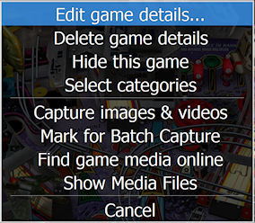

PinballY lets you handle game setup through the regular user interface. There are no separate programs you have to run, and it shouldn't be necessary to edit any configuration or database files by hand. (It's possible to edit the game list data files by hand, since they're all stored in human-readable text formats, but you shouldn't ever have to look at or edit any of those. If you're curious about the details of how the various game setup files are stored, see Files & Folders.)
Most of the commands for setting up your game list are in the Game Setup menu:
There are two ways to access this menu:
The Game Setup command is removed from the main menu after you set up a game for two reasons. One is to streamline the menu; most people don't want to see administrative options when just browsing games to play. Another is to reduce the chances that a regular user playing with your cab will accidentally get into the setup menus and mess up your configuration.
Edit game details: Opens the Game Details dialog, which is where you can enter the game's metadata information (title, manufacturer, year of release) and select options for displaying and launching the game.
Delete game details: Deletes the game's XML database entry, which removes its metadata information.
Hide this game: Marks the game as "hidden", so that it doesn't show up in the wheel interface under any of the standard filters. You can still view the hidden games, though, by selecting "Show Hidden Games" in the Operator Menu. The "hidden" option is useful for any table file that you want to keep around but don't want to make playable, such as backup copies, old versions, testing versions, etc.
Select categories: Shows the category list menu, which lets you add and remove category tags for the current game. A category tag is just an arbitrary short text term, such as "Movie Theme" or "Science Fiction", that you find useful to classify games in your collection. You can make up as many category tags as you like, and you can assign any set of tags to any game. Once tags are assigned, you can use the "Filter by Category" command in the main menu to display games matching a particular tag.
Capture images & videos: This lets you create background image and videos for the current game by launching the game and taking live screen shots and video captures of the game in action. Selecting this command shows a series of prompts gathering information on which items to capture.
Mark for batch capture: Marks the current game for inclusion in the next Batch Capture operation. This lets you create an ad hoc group of games to include in a batch.
Find game media online: Opens a browser window and initiates a Web search for HyperPin "Media Packs" for the current game. The search term is based on the game's title, and in most cases it will find at least one matching media pack in the top few search results. This is a quick way to find online media without having to do a lot of manual searching. You'll probably want to use the "Capture" option for most of the background media items, but Media Packs are still great additions, because they usually contain several items that you can't get via a screen capture: a logo for the game to display in the wheel UI, images of the game's original apron instruction cards, and scans of the marketing flyer that the manufacturer created to advertise the game when it was released.
Show media files: Opens the media file list for the current game, which shows the directory locations and filenames for all of the game's image, video, and audio files. This can be quite helpful when troubleshooting media display problems, and also lets you see at a glance exactly which media items are installed for the game and where they all are.
Cancel: Closes the menu.